I used a switch structure and an if statement to take eventreader's keycodes and access if they read an arrrow key or read that a key was unpressed
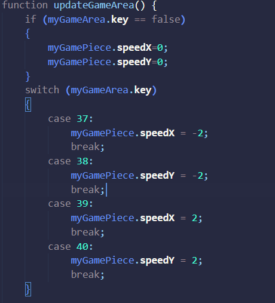 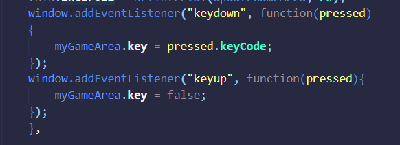For the sound effects, I first declared them in the src of the audio html tag and gave them ids to be accessed by javascript
For the start button html I set an event to trigger my "click_start" function on click

In javascript for the button audio I made a function to start the game and play a sound effect when the button is clicked by storing the id of the audio I declared in a variable and using the play() function

For the Obstacle audio, I set an event listener to immedietly store the id of the hit sound effect in the variable hit_audio.
Then I put the play function for this audio inside the if statement checking if an obsticle has been hit.
However, I realized the audio would play forever if an object was hit. So I added a StopGame function into the GameArea to clear the interval so the game would stop and added it into the if statement (seen above)
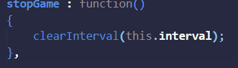After this I worked on a pause/continue button which was actually very simple. just set up a boolean variable and change its value via a function when the button is pressed. Then use an if statement to return from updating the game area if the pause button gets clicked and to resume if clicked again
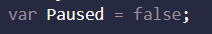 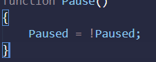 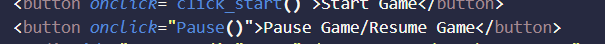 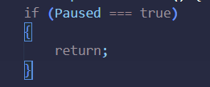Finally to finish off the base requirements of the game enhancement, I changed the bars to images of poles and gave the gamepiece a beginner animation to swap between 5 states depending on arrow key pressed by inserting the change into the switch and if statement I set up for arrow controls. I created a function in the game area to draw the image and also changed the update function to reflect this. However I noted a hitbox issue as the character was now a circle not a square.
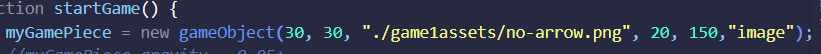 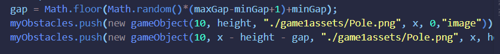 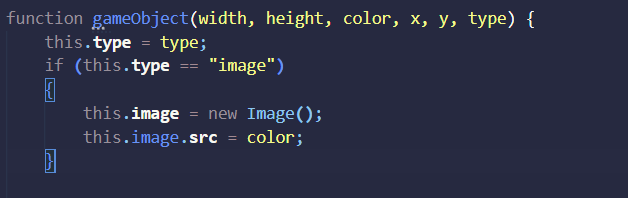 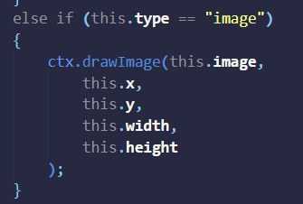 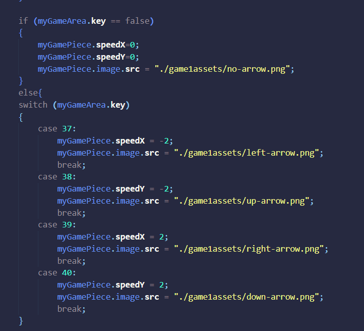After this, I ended up changing the character to a helicopter that turns around if going right. Then I wanted to set up a looping sky background and some background music
To add the background music, I simpily used the "loop" attribute in html on the audio and set it to start when clicking the start game button and stop when the game is lost
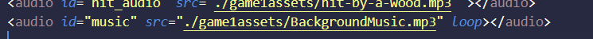As for the looping background, I made a new gameObject for it and gave it a new "type" of "background" so that I could draw it twice using an if statement for looping purposes. Then I updated the new pos method to reset the background position if it reaches the end. And finally, updated the update function to update every frame and set the speed.
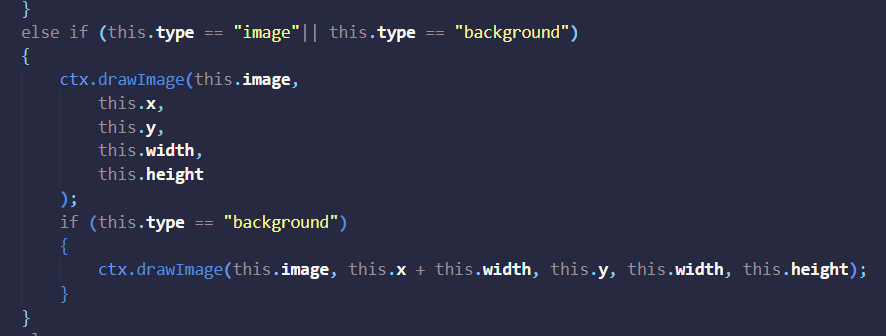 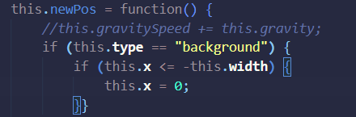
I then Decided to make the buttons disappear and appear as needed in the game and also add a restart button. So i first set the default values of the pause and restart buttons to not display and set the start button to display
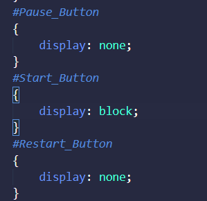Then I set triggers in the code to show and hide the buttons as needed (Show start only at the start hide others, Show Pause/Continue while the game is running, Show restart when player loses

Finally, I added a restart button which triggers upon clicking the restart button that resets all the game objects to what they were before starting and then calls the startgame function to restart the game. I also put the reading of all my audio in a DOM event listener so I can use them freely in the code nd moved my sounds that play on start to the start game function
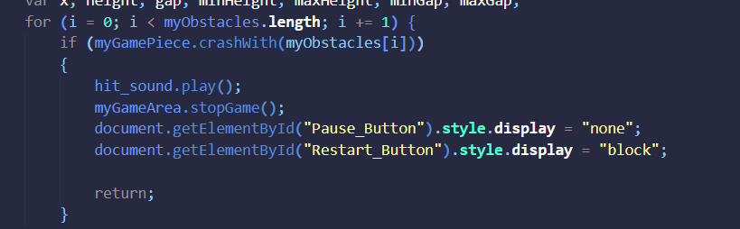 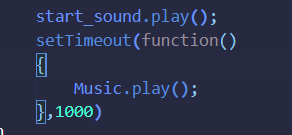 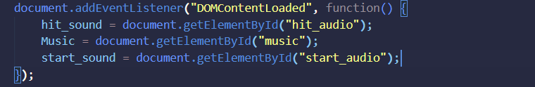Then I wanted to add an explosion after losing. I had some trouble getting the explosion to show up to replace the helicopter as it either didnt show up or showed up over the still visible helicopter when trying to directly replace it. So I created a new game object and set its position to be overtop the helicopter object on death (after messing with x and y for a bit. Also delayed the stop game function a little to allow the explosion to appear first
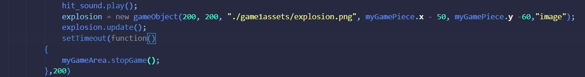